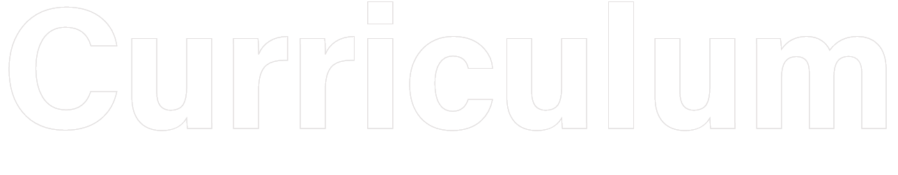
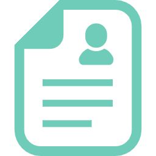
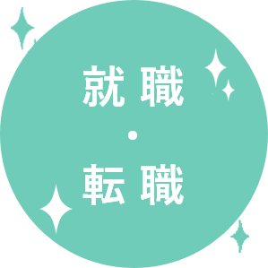
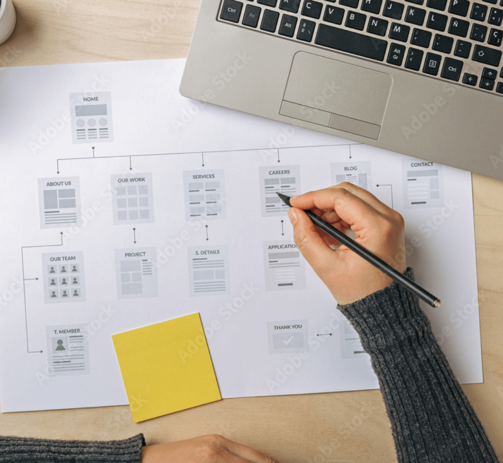
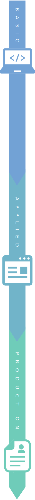
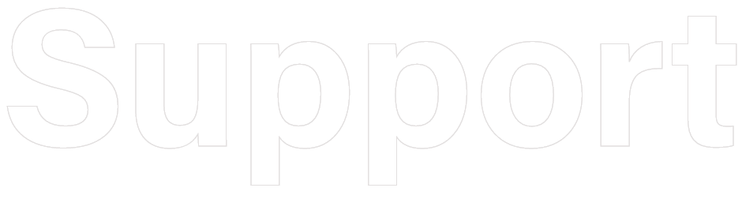

カリキュラム
トレンドを実践的に学習
一人ひとりの成長を実感できる
半年間の実践的なカリキュラム
WSSでは半年間で、体系化されたカリキュラムのもと、独学では身に付きにくいデザインの基本から、
Webサイトを制作する上での基礎技術、実際にWeb現場で利用されている知識・技術まで学習します。
進化の早いWeb業界に合わせた、「今」必要な技術と知識をWSSで学習できます。



BASIC
APPLIED
PRODUCTION

Web知識講習
HTML・CSS基礎実習
Webサイト制作に必要なソフトや画像の仕組み、基本的なパソコンの使用方
法、HTML（HTML Living Standard）やCSS（CSS3）など、
これから6か月間学習する内容の基礎分野の学習をします。
授業後半にはこれまで学習した内容を用いた自己紹介サイトも制作します。
CSS設計
コーポレートWebサイト実習
これまで学習した内容を用いて、グループワークを行います。
学校側が模擬的に案件を依頼し、グループ毎に一つのWebサイト企画から
デザイン・コーディングまでに手掛け、プレゼンを行います。様々な問題点を解決
しながら、技術・知識ともに更にレベルアップしていきます。

レスポンシブデザイン
基礎・制作実習
就職活動に必須アイテムとなっているポートフォリオ（作品集）サイトを、
レスポンシブとなるよう（マルチデバイス対応）設計・制作します。
学んできたことをアピールできる作品もあるので、技術を最大限に活かせるよう、
コンセプトからデザイン・コーディングまで仕上げていきます。

Webデザイン基礎実習
Webデザイン制作実習
Adobe Photoshop CCで画像編集・写真加工を、
UI/UXデザインツールであるAdobe XDの基本操作を学びます。
その後はデザインについて触れながら、Webサイト制作時に必要となる
ワイヤーフレームの作成方法・デザインカンプの制作などを実践的に学習します。
JS実習
Sass(SCSS)
Sass（SCSS）という拡張言語（メタ言語）やJavaScript（jQuery)を利用して
ホームページに動く要素やWebアプリケーションを追加する方法を、
基本から応用まで実践的に学習します。アニメーションなど動的な要素を
加えることができるので、デザイン表現の幅を広げることができます。
Webサイト企画・デザイン実習
Webサイト制作実習
実際にある企業または、お店のWebサイトを、疑似的な案件として制作します。
企画・デザインからコーディングまで行うことで、仕事に近い感覚で流れを理解
することができます。６か月間の集大成でもあり、成果物は就職活動で使用できます。
充実した就職支援制度
WSSではWebに関する知識・技能、そして社会に受け入れられる人間力を身に付けた人材を送り出すため
就職サポートとしてきめ細かいキャリア形成支援を行います。
これまで培ってきた経験と実績を活かし、社会へ踏み出す第一歩を全力でサポートします。

キャリアコンサルティング
今後のキャリアプランを共に考え、
一人ひとりの悩みに寄り添いながら、キャリアの
選択肢が広がるよう、サポートいたします。
職業人講話
第一線で活躍している企業の経営者をお招きして
直接お話を伺います。
企業の雰囲気を知ることで、実際に働くイメージ
がわき、就職意欲がさらに高まります。
模擬面接
生徒同士で模擬面接を行います。
ヒアリングを通して、自身がまだ気づけていない特性や
価値観をお互いに発見しやすくなります。
制作物の講評・添削
就職活動に必要なポートフォリオや
自主的に制作した作品など、
デザイン力や技術向上のためアドバイスを行います。
その他サポート
履歴書・職務経歴書の添削など、
訓練中、または訓練修了後もサポートしております。
就職への疑問などありましたら、ご相談ください。
資格取得はエキスパート級合格率98%
WSSの授業とは別に資格試験も受験可能です。
こちらは任意受験となる為、別途料金は発生しますが、学習した内容を形にして証明できるので受験される方がとても多いです。
資格試験を通して基礎もしっかり身に付くのでお勧めです。
WEBクリエイター能力認定試験 HTML5
Webクリエイターに必要とされる、Webサイト制作のデザイン知識および
Webページのコーディング能力を測定・評価する認定試験です。
更に詳しい内容は以下から確認できます。
基礎学習
応用学習
制作学習